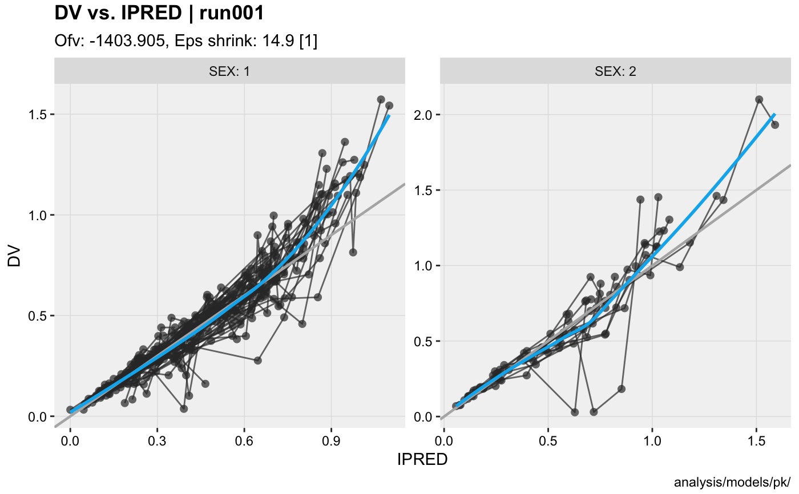
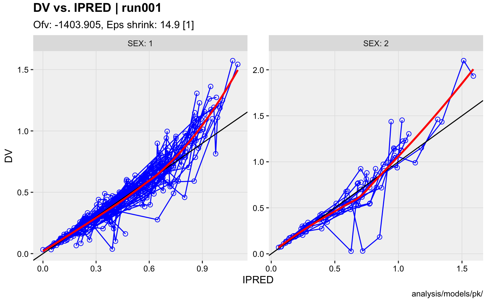

xpose themes are used to consistently apply a set of preference for the plot geoms (e.g. color scales, point size, etc.) whereas ggplot2 theme focus on the plot background, axes, titles etc.
theme_xp_default: The default xp_theme in xpose
theme_xp_xpose4: An xp_theme that makes xpose look like xpose4.
theme_xp_default() theme_xp_xpose4()
#>#># With the xp_theme theme_xp_xpose4() xpdb_ex_pk %>% update_themes(xp_theme = theme_xp_xpose4()) %>% dv_vs_ipred(facets = 'SEX')#>#>